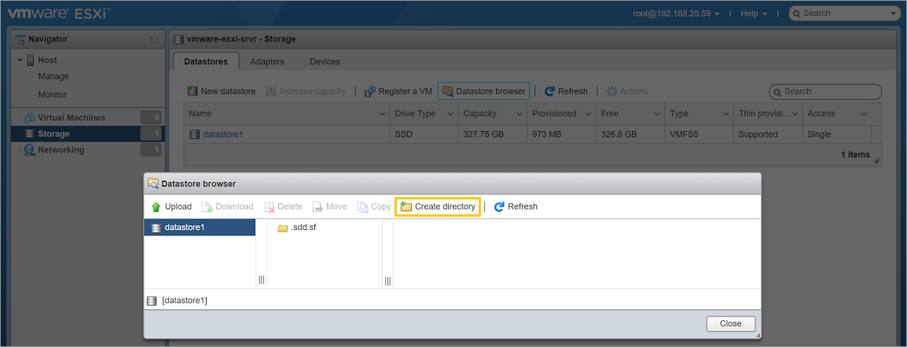
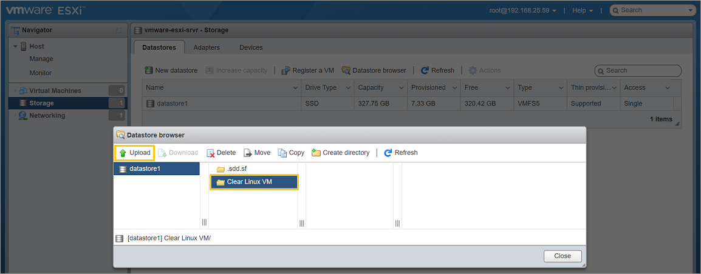
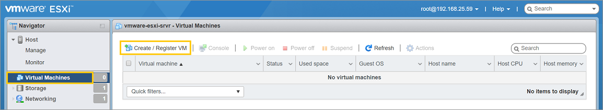
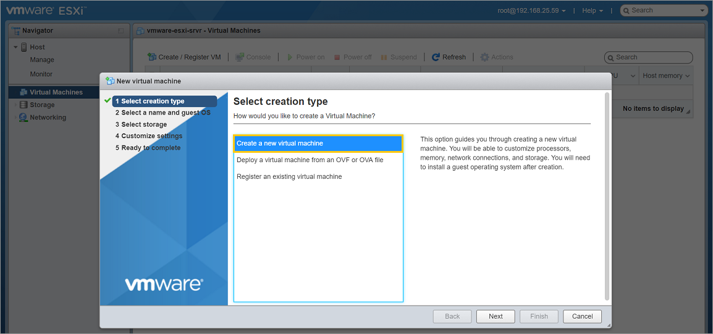
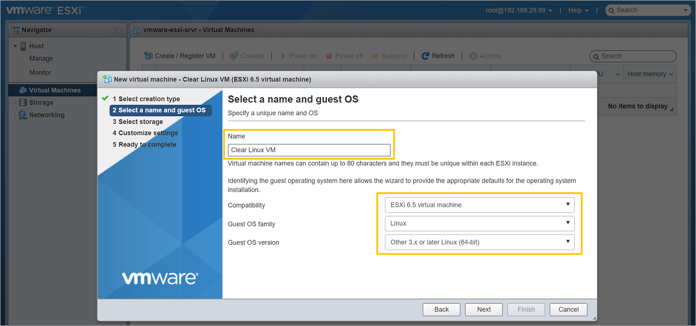
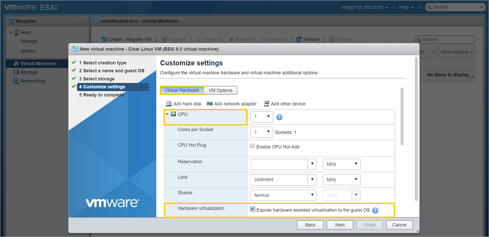
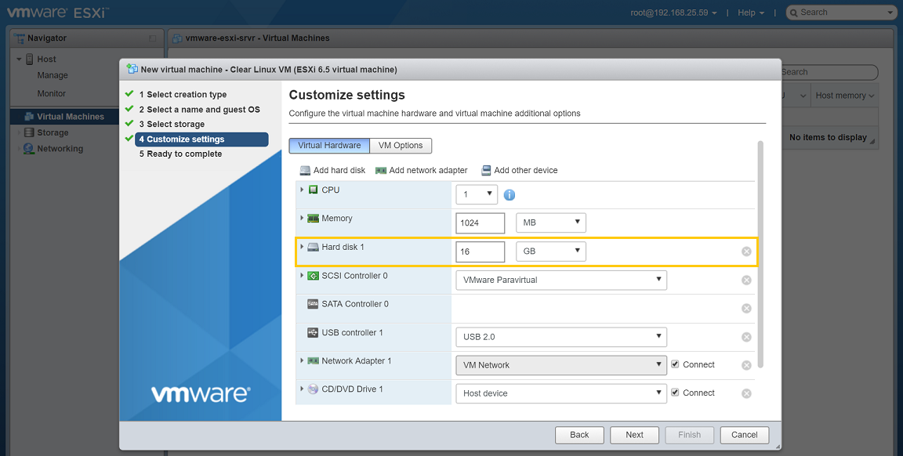
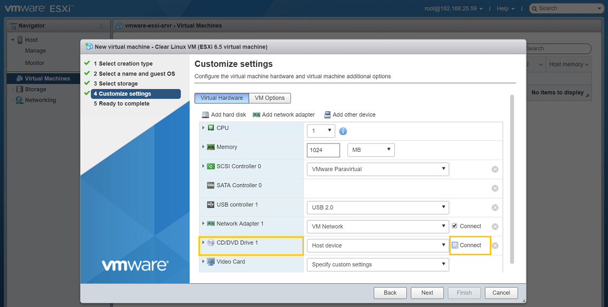
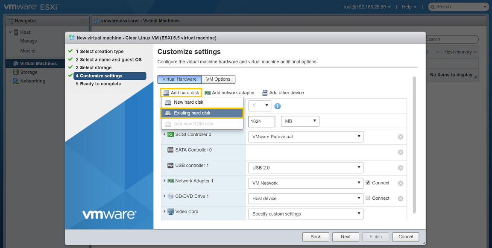
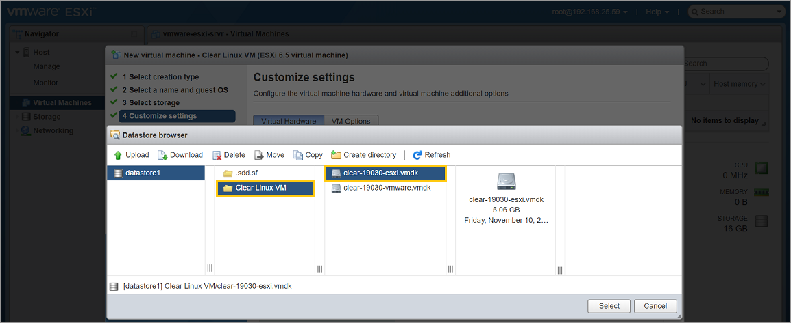

Run preconfigured Clear Linux* OS image as a VMware* ESXi guest OS
This page explains how to deploy a preconfigured Clear Linux OS VMware VM image on a VMware ESXi 6.5 host.
Overview
VMware ESXi is a type 1 bare-metal hypervisor which runs directly on top of server hardware. With VMware ESXi, you can create, configure, manage, and run Clear Linux* OS virtual machines at scale.
We provide a preconfigured Clear Linux OS VMware image that can be run on a VMware ESXi 6.5 host.
If manuall installation is preferred, refer to Install Clear Linux* OS as a VMware* ESXi guest OS.
Note
VMware also offers a type 2 hypervisor designed for the desktop environment, called VMware Workstation Player. Refer to Run pre-configured Clear Linux* OS image as a VMware* Workstation Player guest OS or Install Clear Linux* OS as a VMware* Workstation Player guest OS for more information.
Download the latest Clear Linux OS VMware image
Get the latest Clear Linux OS VMware prebuilt image from the image repository.
Look for clear-[version number]-vmware.vmdk.xz. You can also use
this command:
curl -O https://cdn.download.clearlinux.org/image/$(curl https://cdn.download.clearlinux.org/image/latest-images | grep vmware)
Visit Clear Linux* OS image types for additional information about all available Clear Linux OS images.
We also provide instructions for downloading and verifying a Clear Linux ISO. For more information, refer to Download, verify, and decompress a Clear Linux* OS image.
Upload the Clear Linux OS image to the VMware server
Once the Clear Linux OS VMware prebuilt image has been downloaded and decompressed on your local system, it must be uploaded to a datastore on the VMware ESXi server.
The steps in this section can also be referenced from the VMware documentation Using Datastore File Browser in the VMware Host Client.
Connect to the VMware ESXi server and login to an account with sufficient permission to create and manage VMs.
Under the Navigator window on the left side, select Storage. See Figure 1
Under the Datastores tab, click the Datastore browser button.

Figure 1: VMware ESXi - Navigator > Storage
Click the Create directory button and name the directory Clear Linux VM. See Figure 2.
Figure 2: VMware ESXi - Datastore > Create directory
Select the newly-created directory and click the Upload button. See Figure 3.
Figure 3: VMware ESXi - Datastore > Upload VMware image
Select the decompressed Clear Linux OS VMware image file
clear-[version number]-vmware.vmdkand upload it.
{kind=link}
{kind=link}
Convert the Clear Linux OS image to an ESXi-supported format
Once the Clear Linux OS VMware prebuilt image has been uploaded to the VMware ESXi datastore, it must be converted to a format for usable with VMware’s ESXi hypervisor.
The steps in this section can also be referenced from the VMware documentation on Cloning and converting virtual machine disks with vmkfstools
SSH into the vSphere Management Assistant appliance that is managing the ESXi host or connect to the vSphere hosting using the vSphere CLI.
Note
If there is no vMA appliance or vCLI configured and available, you can temporarily enable SSH directly on the ESXi host by following the steps described in Enable the Secure Shell (SSH) in the VMware Host Client .
As a security best practice, remember to disable SSH access after following the steps in this section.
Locate the uploaded image, which is typically found in
/vmfs/volumes/datastore1.Use the vmkfstools command to perform the conversion, as shown below:
vmkfstools -i clear-[version number]-vmware.vmdk -d zeroedthick clear-[version number]-esxi.vmdkTwo files should result from this:
clear-[version number]-esxi-flat.vmdkclear-[version number]-esxi.vmdk
The
clear-[version number]-esxi.vmdkfile will be used in the next section when you create a new VM.
Create and configure a new VM
In this section, you will create a new VM, configure its basic parameters such as number of CPUs, memory size, and then attach the converted Clear Linux OS VMware image. Also, in order to boot Clear Linux OS, you must enable UEFI support.
Under the Navigator window, select Virtual Machines. See Figure 4.
In the right window, click the Create / Register VM button.
Figure 4: VMware ESXi - Navigator > Virtual Machines
On the Select creation type step:
- Select the Create a new virtual machine option. See Figure 5.
- Click the Next button.
Figure 5: VMware ESXi - Create a new virtual machine
On the Select a name and guest OS step:
Give the new VM a name in the Name field. See Figure 6.
Set the Compatability option to ESXi 6.5 virtual machine.
Set the Guest OS family option to Linux.
Set the Guest OS version option to Other 3.x or later Linux (64-bit).
Click the Next button.
Figure 6: VMware ESXi - Give a name and select guest OS type
On the Select storage step:
- Accept the default option.
- Click the Next button.
On the Customize settings step:
- Click the Virtual Hardware button. See Figure 7.
- Expand the CPU setting and enable Hardware virtualization by checking Expose hardware assisted virtualization to the guest OS.
Figure 7: VMware ESXi - Enable hardware virtualization
- Remove the default Hard drive 1 setting by clicking the X icon on the right side. See Figure 8.
Figure 8: VMware ESXi - Remove hard drive
- Since a preconfigured image will be used, the CD/DVD Drive 1 setting will not be needed. Disable it by unchecking the Connect checkbox. See Figure 9.
Figure 9: VMware ESXi - Disconnect the CD/DVD drive
- Attach the
clear-[version number]-esxi.vmdkfile that was converted from the preconfigured Clear Linux OS VMware image.- Click the Add hard disk button and select the Existing hard drive option. See Figure 10.
Figure 10: VMware ESXi - Add an existing hard drive
- Select the converted
clear-[version number]-esxi.vmdkfile. Do not use the original unconvertedclear-[version number]-vmware.vmdkfile. See Figure 11.
Figure 11: VMware ESXi - Select the converted
clear-[version number]-esxi.vmdkfileClear Linux OS needs UEFI support in order to boot. Enable UEFI boot support.
- Click the VM Options button. See Figure 12.
- Expand the Boot Options setting.
- For the Firmware setting, click the drop-down list to the right of it and select the EFI option.

Figure 12: VMware ESXi - Set boot firmware to EFI
Click the Save button.
Click the Next button.
Click the Finish button.
{kind=link}
{kind=link}
{kind=link}
{kind=link}
{kind=link}
{kind=link}
{kind=link}
{kind=link}
Power on the VM and boot Clear Linux OS
After configuring the settings above, power on the VM.
Under the Navigator window, select Virtual Machines. See Figure 13.
In the right window, select the newly-created VM.
Click the Power on button.
Click on the icon representing the VM to bring it into view and maximize its window.

Figure 13: VMware ESXi - Navigator > Virtual Machines > Power on VM